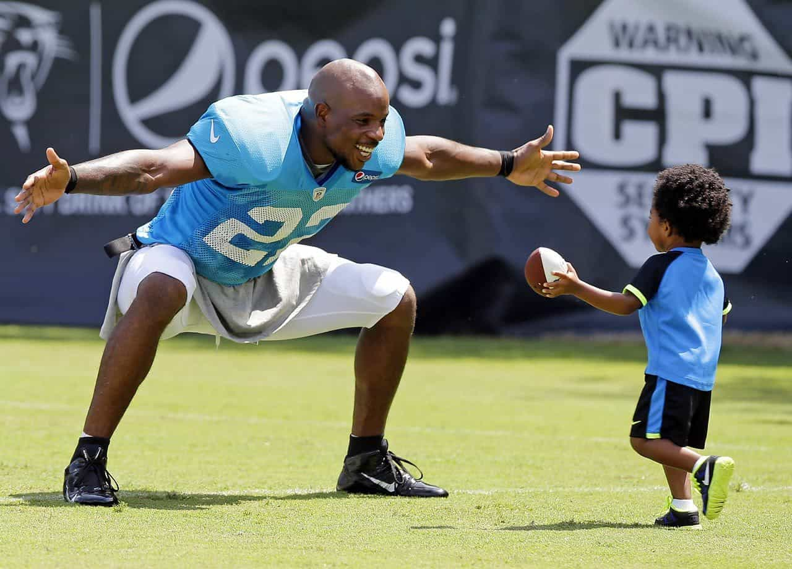
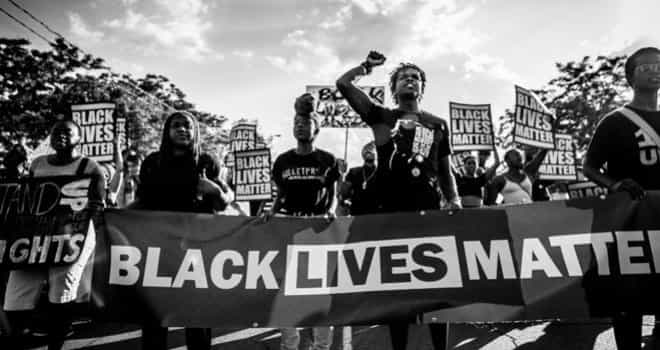
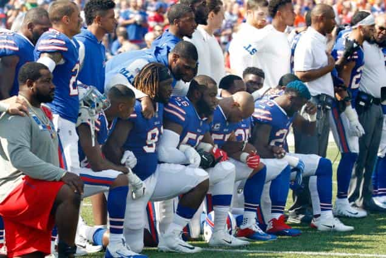

Ned is an intellectual bushranger. He has spent the past ten years in the leftist corridors of Australia’s universities and civil service and he’s had enough.


Jimbo Jones recently outlined the growing dispute between President Trump and black NFL players who are kneeling during the national anthem. I support the players’ free speech rights to kneel, but I wish they wouldn’t do so because they are setting a bad example for young African Americans by promoting a victim mentality.

This is especially disappointing because these players are real success stories and should be serving as positive role models for young black kids. These players have found their talent, worked hard at it, and now legally earn great money within the current US socio-economic system.

The kneeling NFL players are part of the broader Black Lives Matter protest movement which campaigns against anti-black racism, especially police shootings of African Americans. Opposing innocent black people being shot by police is fine; none of us want to see any innocent person get shot by anyone.
The problem with Black Lives Matter is that their narrative is distorted. They do not put any focus on the black on black shootings which account for 90%+ of black people who are shot. Black neighbourhoods in Chicago and other cities are not dangerous because police are rolling through shooting everyone. They are dangerous because every night black gangsters shoot other black gangsters and anyone else unlucky enough to get in their way.
Black people being shot is overwhelmingly a problem within the black community. If African Americans are genuinely worried for the safety of their sons they should be focusing on ending gang violence in their communities, but Black Lives Matters chooses to use rare police shootings as an excuse to promote a radical narrative that the US is a fundamentally racist nation in which African Americans are not given a chance to live peaceful and successful lives. They are therefore promoting a victim mentality.
According to FBI figures, both blacks (90%) and whites (82%) are overwhelmingly killed by their own race. But many more whites are killed by blacks (15%) than blacks killed by whites (8%). White lives matter too.

Even if you are genuinely a victim, having a victim mentality is unhelpful because it is disempowering. A person with a victim mentality sits around feeling sorry for themselves and dismisses any positive actions they could take to improve their situation as “pointless” or “too hard”.
Yes, racism against black people still exists in the US. Yes, a disproportionate number of black kids are disadvantaged, but the answer to those problems is not to reject US society and choose easy but ultimately disastrous options like crime and drug use.
The answer is to take individual responsibility and positive action for yourself and your family. Find your talent, work hard and follow the rules of the system. If the system really is stacked against you then use that for motivation and work twice as hard to spite the system. Most people in the third world would kill to have the opportunities that disadvantaged African Americans have.
The fact that black NFL players are promoting a victim mentality is so disappointing because they have obviously not lived by a victim mentality in their own lives. When time came to try out for junior football did they stay home because they were worried the coach might be racist? When the trainer pushed them for one more rep in the gym did they quit because it wasn’t fair? When they lost a game did they blame the umpires, did they declare that they system was rigged and then quit to pursue a life of crime? No, no and no.
Most black kids won’t become millionaire athletes. Neither will most white kids. But the traits that made black NFL players successful – hard work, resilience, teamwork, determination – are useful to everyone everywhere. These players should spend less energy undermining the system that pays them millions of dollars, think more about what has made them successful in their own lives, and encourage other African Americans to follow their example. It’s time for these players to stand up and be role models.
Read more: If Black Lives Matter, Blacks Need To Stop Killing Each Other